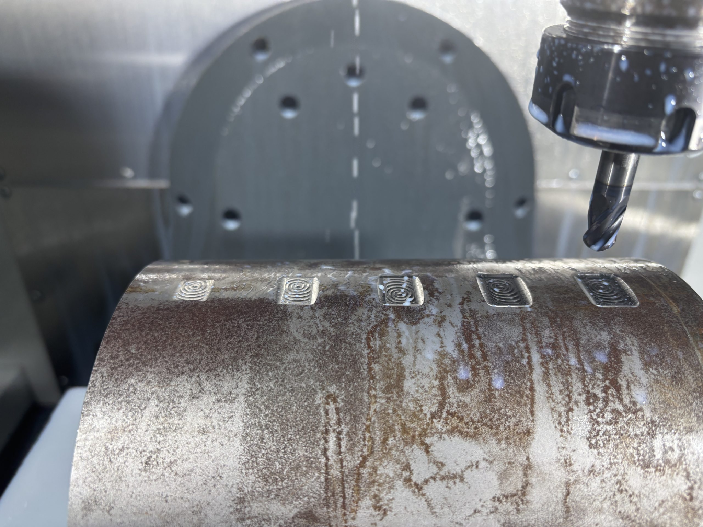

Directed Energy Deposition for Metal Repair
Process–structure–property relationships in DED repair of Inconel on steel substrates.

How do DED process parameters influence the structure and resulting properties of Inconel repairs deposited on steel substrates?
Research Focus
Directed Energy Deposition (DED) is an additive manufacturing process in which a concentrated energy source creates a melt pool while metallic material is deposited onto an existing surface. Its ability to selectively add material makes DED particularly promising for repairing and remanufacturing high-value metallic components.
My research focuses on understanding the process–structure–property relationship in DED repair, particularly for Inconel deposited onto steel substrates. The project investigates how processing conditions influence deposition quality, heat-affected-zone formation, microstructure, bonding, defects, and resulting mechanical properties.
Ultimately, this research seeks to better understand how DED processing parameters can be selected to improve the structural integrity and reliability of repaired components.
My Responsibilities
My responsibilities include conducting literature reviews on DED and dissimilar-material repair, supporting experimental planning and deposition trials, preparing and processing material samples, and analyzing experimental data.
As the project progresses, I will investigate relationships between processing conditions, microstructure, defects, heat-affected zones, and mechanical behavior to support DED process optimization.
Processing Conditions
Laser power
Scanning speed
Heat input
Material Response
Microstructure
Heat-affected zone
Bonding & defects
Performance
Hardness
Mechanical behavior
Structural integrity
Hybrid Repair & Remanufacturing
DED enables targeted material addition, while machining can restore the final geometry and surface condition of the repaired component.
